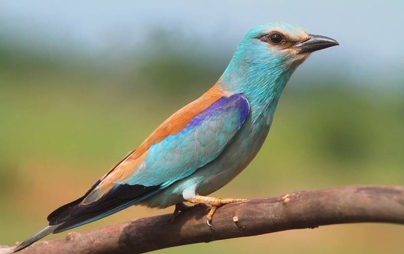
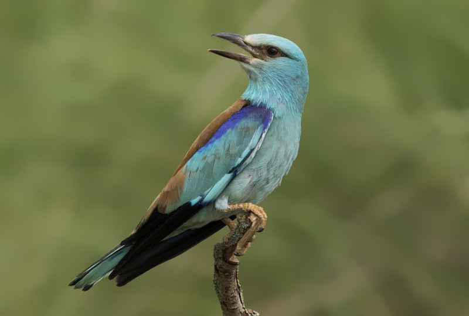
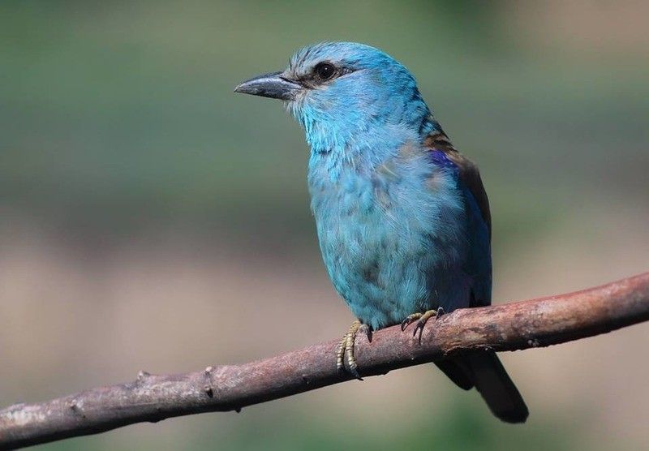

Официальное название птицы – Coracias garrulus. Сизоворонка отличается ярким окрасом, небольшим весом. Размером вид похож на дрозда. Другие названия птицы: ракша, обыкновенная сизоворонка. Местом обитания является степь.
Вид не находится в самом критичном состоянии, но тенденция последних лет негативная и создает предпосылки для полного исчезновения популяции в ближайшем будущем. Вид находится в списке Международного союза охраны природы. Основной статус – находится под наименьшей угрозой.
Подсчитать точное количество взрослых особей не так просто. По исследованиям, которые велись с 1960 года по 1990 год, общее количество парнокопытных находилось в пределах 100 тыс. особей. В 1970 году численность уже составляла от 25 до 40 тыс. взрослых особей. Следующий подсчет был проведен в 2014 году. Тогда количество повысилось и составило около 73 тыс. взрослых особей парнокопытных.
С конца 90-х годов глобальные исследования не проводились. Состоянием на 1970 год в районе плато Путорана обитало около 1,5 тыс. представителей горного вида, а спустя еще 10 лет численность популяции выросла до 3,5 тыс. Постепенно вид увеличивался в численности, спустя еще десятилетие насчитывалось больше 6 тыс. взрослых особей.
Современные популяции устойчивы по численности, но занимают не так много территории России. Они нуждаются в умеренных мерах защиты, особенно ареалы, которые исторически самые подходящие для обитания популяции Ovis nivicola.
Популяция относится к всеядным. Основной частью рациона являются насекомые. Среди них саранча, жуки.

Основным местом обитания является степь. Птица гнездится на открытой, но отдаленной территории. Степная Европа – идеальное место для создания гнезда, поиска пищи. Азия подходит для зимовки или постоянного проживания. В России основным местом обитания является Алтай.
Степная часть страны подходит для воспитания молодняка. Вид относится к перелетным. Миграция длительная, птица выбирает несколько мест для временного проживания.
Для зимовки подходят жаркие страны, как Африка. Нередко сизоворонка проживает в Азии или зимует там, а потом возвращается в центральную часть Европы.